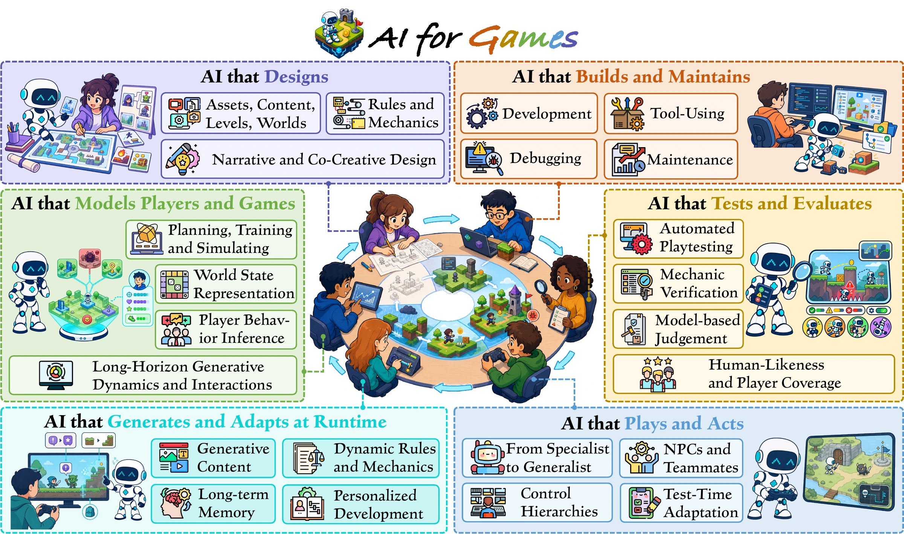
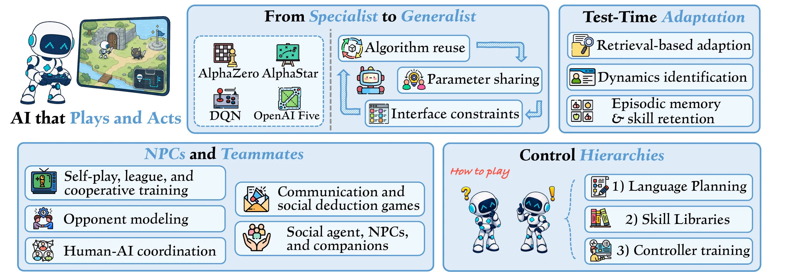
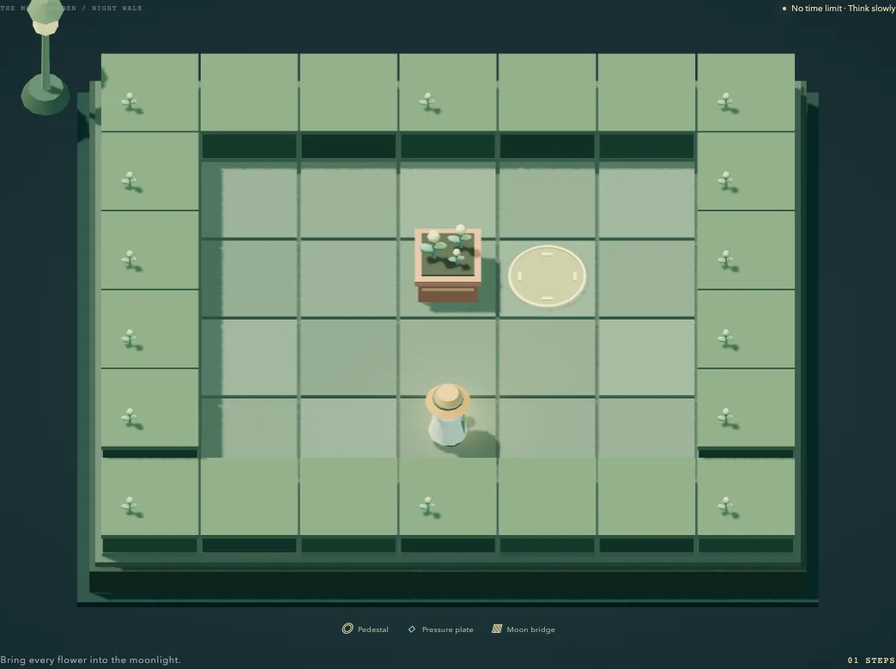
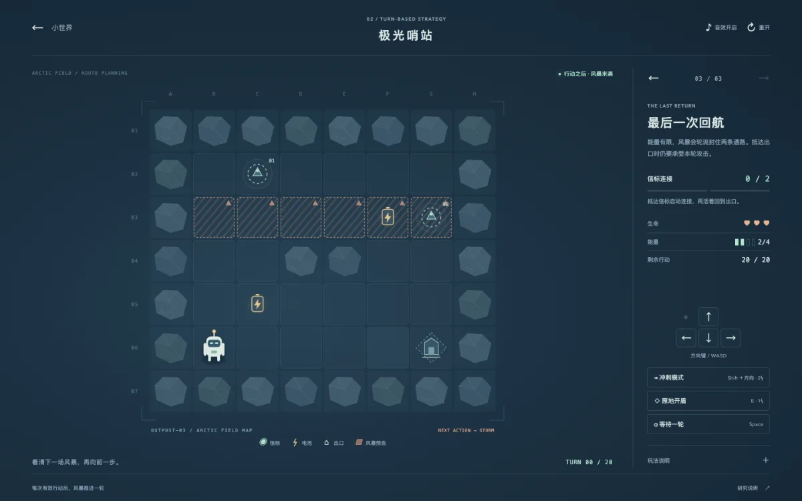
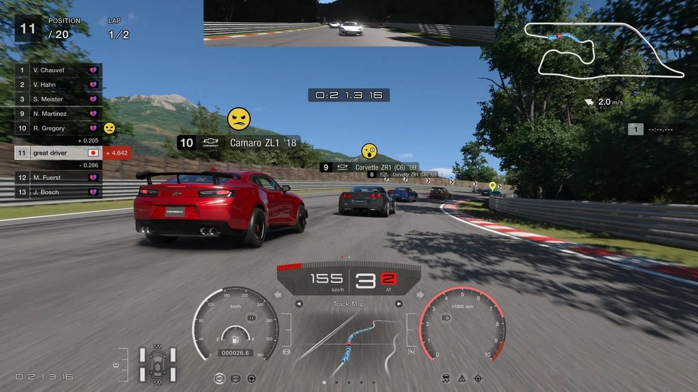

Boundary
What is supplied by the game or workflow, and what is assigned to AI?
THE FOUNDATION MODEL ERA
The next move is
more than playing.
A visual companion to the survey of how foundation models play, model, design, build, adapt, and test games.
Survey companion · Concepts, evidence, and an open reading collection
Game AI has never been limited to playing. The foundation-model era makes the field’s wider shape impossible to miss.
AI can now act as a player or character, model a world or its players, propose content and rules, operate inside a game engine, change a live experience, and produce testing evidence. The same pretrained model family may touch several of these tasks, but each role still depends on different interfaces, constraints, and forms of evidence.
The survey therefore follows the immediate use of AI output. This separates a proposed mechanic from its implementation, a player forecast from the adaptation it informs, and a tester’s action from the verdict it supports.
See the organizing map02 THE ORGANIZING MAP
The roles classify what an output is used for. The connectors show selective inputs and feedback—not a required architecture.

Six uses of AI output around an executable, player-facing game.
These questions turn the foundation-model era from a date label into a common analytical lens.
What is supplied by the game or workflow, and what is assigned to AI?
Which capabilities transfer, which artifacts can be reused, and what remains setting-specific?
What claims does evaluation support where the output is used?
03 THE ROLE ATLAS
Each chapter follows a different output, operating context, and empirical claim. Select a role to see its research structure and synthesis.

01 / PLAY AND ACT
AI selects actions, plans, or messages inside a game. Foundation models broaden perception and planning, while the path to native controls remains game-specific.
04 CROSS-ROLE FINDINGS
Connections matter when another role can use the output. The receiving system still needs evidence that the exchange improved its own task.
Pretraining makes language, vision, code, actions, and tools easier to connect. Controls, rules, engine conventions, state, and player contexts remain setting-specific.
Trajectories can train world models, imagined experience can train policies, and play traces can diagnose software. The record must preserve the state, actions, and requirements its next user needs.
A reusable artifact does not carry a reusable verdict. A player profile, generated design, simulator, or test trace must be validated again through the outcome it is used to produce.
PLAY TWO AI-BUILT WORLDS
Two browser games from an AI-assisted game-making study. Their Codex-generated rule kernels were exercised against executable trajectories; here, readers can try the resulting mechanics directly.

WORLD 01Push planters onto moonlit goals, hold pressure plates, open the bridge, and undo mistakes while solving three compact spatial puzzles.

WORLD 02Read the next storm footprint, manage scarce energy, activate every beacon, and return safely using dash, shield, and wait.
05 PROJECTS, IN VIEW
Six roles, seen through public project imagery. Each example links to its original source and is described at the level its evidence supports.

From specialist policies to language-guided agents, this literature studies how AI perceives a game, chooses actions, and coordinates with other players.
GT Sophy brings learned racing behavior into Gran Turismo 7, connecting research in real-time control with a game people can play.
Illustrations from the cited projects; rights remain with their respective owners.
← → to navigate collections06 THE READING ROOM
Search the complete survey bibliography by topic, year, or keyword. Role filters distinguish the core research map from supporting foundations and context.
421 references in the bibliography
Try another title or topic, or reset your filters.
04 AN OPEN COLLECTION
Know a paper that belongs here? Help make the collection more useful to researchers, designers, and developers.
THE SURVEY TEAM
Manuscript forthcoming.
1 National University of Singapore · 2 Tencent